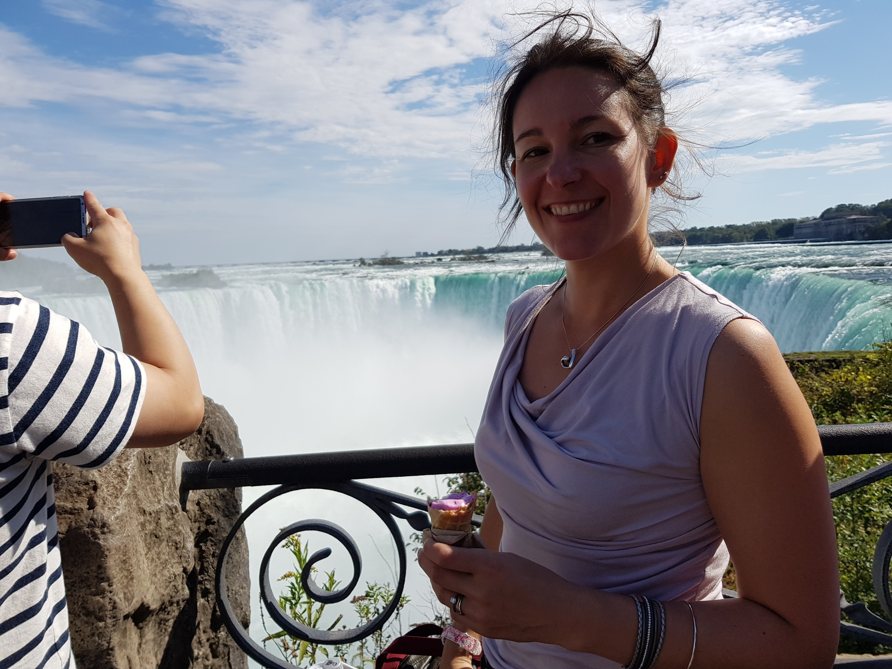
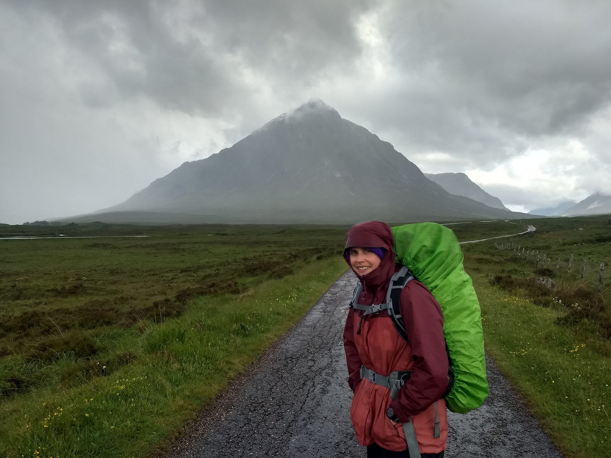

Steph Burns
I am a Social Science Research Assistant with a background in Anthropology and Global Health Policy. I am focussing on the sociotechnical
analysis of the project and interested in using social science techniques to understand trust at the data-care interface in ICU environments.

Dr Annemarie Docherty
I hold a Wellcome Career Development Award and am a Consultant in Critical Care at the Royal Infirmary Edinburgh. My research
focuses on the transformation of care and outcomes for Intensive Care (ICU) patients by unlocking the potential of these data-rich
clinical environments.
Dr Rob Donald
I am an Honorary Research Fellow with a background in marine, electrical and software
engineering. I have been working as a data scientist on healthcare projects since 2007.
My research interests with the group are in artifact detection and models to
spot the early stages of myocardial ischemia in a general ICU.
Dr YK Ko
I am a Data Analyst with a background in neuroscience, molecular biology, and drug discovery.
I am interested in integrating data science into healthcare to advance precision medicine for critically ill patients.
Mo Kouli
I am a Biomedical Engineer (BEng), currently undertaking a PhD with the AI for Biomedical Innovation CDT.
My research focuses on developing AI-driven systems for continuous monitoring and early detection of post-operative complications.
My interest lies in the application of AI solutions to effectively improve healthcare development.

Robert McElrea
I am an MBChB student at the University of Edinburgh currently intercalating in Anaesthesia, Critical Care, and Pain Medicine BMedSci (Hons).
My research focuses on critically appraising the current literature and analysing ICU data to understand how atrial fibrillation in critically
ill patients is managed, exploring variations in treatment strategies and their effects on clinical outcomes so patients can be managed with the most up to date evidence.
Dr Marina Medrano
I am a Critical Care doctor at the Royal Infirmary of Edinburgh, working part-time with the ICU-Heart group.
I am expanding my data science expertise and using my clinical experience to bridge the gap between clinical
and analytical teams, aiming for better outcomes for ICU patients.
Dr Cath Montgomery
I am a Sociologist of Science and Medicine. I am conducting ethnographic research into how critical care is
changing with the advent of new data practices.
Dr Craig Nicolson
I am a Post-Doctoral Researcher from a background of clinical practice with a Masters in Biomedical AI. I am interested in
working with large volumes of routine healthcare data to improve care and clinical practice using machine learning and AI.
I am particularly focused on using these tools for real world problems and implementing them in standard patient care.

Dr Rosalyn Pearson
I am a Data Analyst with a background in particle physics. I transitioned to healthcare informatics
through my work as an analyst at Public Health Scotland. At ICU-Heart my focus is on
identifying myocardial infarction using high-frequency data from continuous
monitoring in ICU.
Dr Malcolm Phillips
I have a background in electronic engineering and hold a Doctorate in Medical Electronics and Physiological Measurement.
I am Head of Medical Equipment Management/Clinical Engineering for NHS Lothian, leading the team who are responsible for
the management, safety and governance of most of the medical devices within the Health Board. I am the Co-chair of the
Health Boards' Medical Devices Committee. My research interests include all areas of physiological measurement. I also
have an interest in human factors and the development of safer medical device systems that maximise patient safety through
the use of data connectivity, big data and machine learning.
Dr Ian Piper
I am a Healthcare Scientist with an interest in time-series analysis of ICU monitoring data towards improved
identification of abnormal physiology. I enjoy supporting multi centre collaborations.
Dr Sinziana Radulescu
I am a veterinary surgeon and an Edinburgh Clinical Academic Track (ECAT) lecturer. I am currently undertaking a PhD focused on
exploring the interplay between multimorbidity, polypharmacy and frailty in ICU patients.
Stella Rhode
I have a background in philosophy and computer science and am undertaking an EPSRC PhD exploring
the ethical application of AI and causal inference methods for risk prediction in critical care.
I am interested in exploring how philosophical and technical thinking can be integrated to make
explicit the ethical and epistemological impacts of decisions made during model development.
Past team members
Oliver Xue
I am an MBChB student at the University of Edinburgh currently intercalating in Anaesthesia, Critical Care,
and Pain Medicine BMedSci (Hons). My research focuses on data analysis within a learning health system in ICU,
evaluating guideline compliance and developing visualisations for out-of-hospital cardiac arrest care.